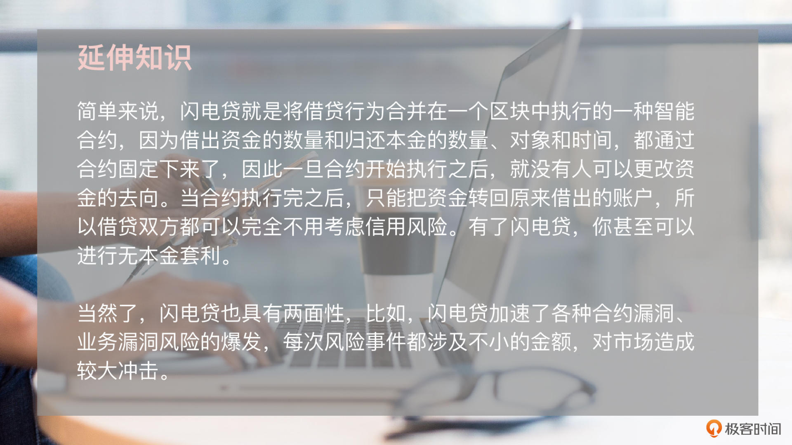
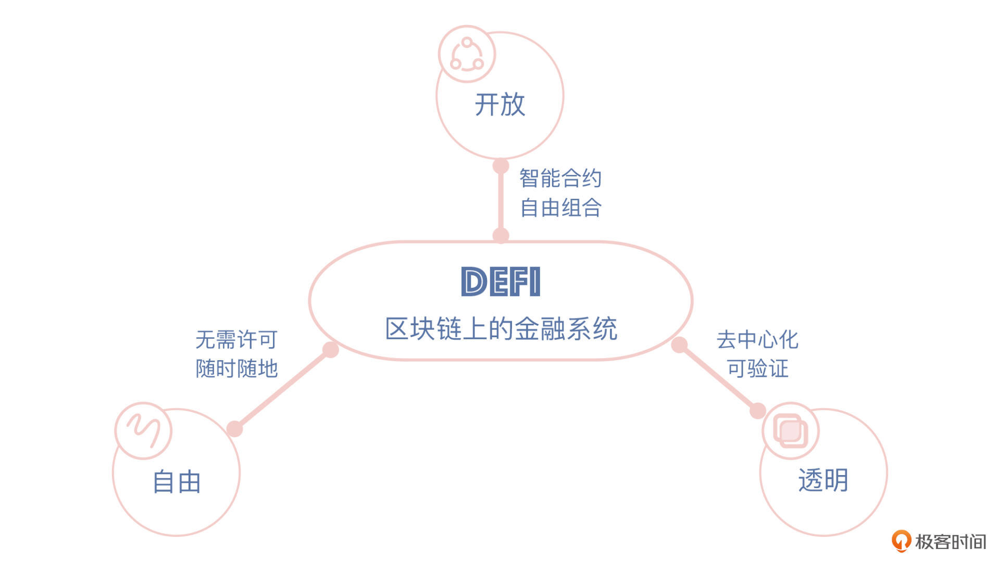
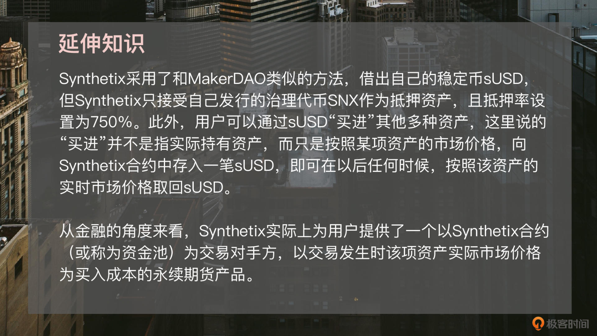

- 00 开篇词 Web 3.0：一场已经开启的互联网革命！.md.html
- 01 我们为什么需要Web 3.0？.md.html
- 02 公链：从计算分层开始.md.html
- 03 继续分层：身份和激励.md.html
- 04 NFT（一）：数据确权及其文化和商业价值的发现.md.html
- 05 NFT（二）：数据确权及其文化和商业价值的发现.md.html
- 06 边玩边赚能给游戏和电商带来新的商业模式吗？.md.html
- 07 Web 3.0社交和创作者经济.md.html
- 08 区块链：从底层重构金融.md.html
- 09 DeFi：“三无模式”开辟金融新蓝海.md.html
- 10 关于DAO的七个真相和两个趋势（一）.md.html
- 11 关于DAO的七个真相和两个趋势（二）.md.html
- 12 DeFi的空中楼阁能盖多高？.md.html
- 13 代码和法律，哪个更强？.md.html
- 14 Web 3.0正在形成的合力.md.html
- 特别放送 Yuga Labs：Web 3.0迪士尼的谛造之路.md.html
- 结束语 Web 3.0时代，你的创造和收获！.md.html
- 捐赠
09 DeFi：“三无模式”开辟金融新蓝海
你好，我是郭大治，很高兴与你在极客时间再次相遇。
在上节课里，我们主要了解了区块链对于金融基础设施的影响，还介绍了传统金融产生的一些创新应用案例。今天这节课我们会进入一个全新的领域，这个领域完全基于去中心化底层搭建，不论是业务规则、产品形态还是生存法则，都和传统金融形成了鲜明的对比，但它的风险也不可小觑，这里就是 DeFi。
这一讲，我会带你了解DeFi的基本特点和典型商业模式，以及DeFi面临的一些问题，更多的是帮你建立一套了解DeFi的基本逻辑。如果你以后想要创业或者选择使用DeFi产品，也可以基于这套认知框架来实现。
另外在这里还需要说明的一点是，在课程里我会提到一些金融领域中的专有名词，如果你对这方面并不是特别了解，也没有关系，在讲解的过程中我一般都会先给你做个简单的解释，你也可以根据我给出的链接去自行了解或者在评论区提问。好的，我们正式开始。
如何理解DeFi？
从本质上来说，DeFi是基于智能合约构建的针对加密资产提供金融服务的一系列协议。所以，DeFi包括了两个核心逻辑，一个是金融逻辑，一个是技术逻辑。
我们先说金融逻辑。从功能上来看，DeFi属于金融的范畴，DeFi已经实现了传统金融几乎所有的业务类型，比如交易、借贷、资管、保险和衍生品等，甚至还产生了稳定币和闪电贷等新的业务类型。
而且，DeFi也仍然满足金融的基本规律。比如货币的时间价值，基于货币的时间价值可以给各种资产进行定价；比如流动性溢价，DeFi领域内各种权益的代币化，使得这些权益可以通过确权、交易而被定价；再比如套利，同样适用于DeFi。
可以说，金融规律是DeFi产品设计需要遵循的基本规则，理解DeFi的金融逻辑对于我们来说非常重要，因为只有了解了DeFi的金融逻辑，我们才能针对DeFi的产品收益和相关风险进行分析。
好，我们再来看下DeFi的技术逻辑。DeFi是基于去中心化的底层架构开发的，在这个架构下，账户和合约是基本要素。DeFi不论是在用户操作流程，还是在服务机制上，都跟传统的金融业务明显不一样，当然在风险表现上也很不同：
- 用户使用DeFi产品前，必须选择正确的主网和账户，还要在账户里预留足够的Gas费，理解这种操作模式需要用户具备一定的知识储备；
- 因为操作不慎，转账导致资金丢失的事例时有发生，因为私钥泄露而资产被盗的事件也常常出现。
当然，技术创新带来的也不全都是风险，也有颠覆性的创新，比如闪电贷。用“神奇”两个字来形容闪电贷毫不为过，因为它可以实现无本套利，这在传统金融绝对是不可想象的事情，但是在DeFi世界，它真的就出现了。

DeFi的三大特点
那么，基于DeFi的技术逻辑和金融逻辑，我们把DeFi和传统金融体系做一个比较，其实可以更加形象地把DeFi形容成“无许可、无门槛和无人驾驶”的“三无金融”。
怎么理解这个“三无金融”呢？让我们逐一来体会一下。
第一，DeFi是无许可的金融。
在传统金融世界，你想要接受专业的金融服务，一定离不开专业金融机构的“帮助”，比如你要想赚取利息，就需要先把钱借给银行，银行怎么用钱你管不着，虽然这些钱本质是属于你的；比如买理财、买基金，都需要把资金先交给银行或者基金公司，金融机构发挥专业中介的作用。
但在DeFi世界，你无需委托任何机构或个人。你想要赚取利息、想要投资，只需要存入不同功能的合约就可以了，而且只有你掌握着私钥，你随时可以将你的资产从合约中撤出，无需任何人的批准或者帮助。你不用再担心银行或者其他金融机构会倒闭，也不用再担心金融机构改变服务条款，所以业务只按照事先设定的规则进行。你的资产，永远是在自己的手中掌控。
当然，你获得了这种自由，就需要承担保管资产的风险。
第二，DeFi是无门槛的金融。
只要你有一部手机，只要你安装了Dapp，你就可以自己开户，可以享受各种金融服务。你不需要考虑金融机构是否还在营业，也不需要考虑你是否已经和这家金融机构签约，只要这个合约能向一个客户提供服务，那么它就可以向你提供服务。
不过我们从另一个角度来看，低门槛就意味着大容量，Facebook之前主导的Libra之所以广受关注，主要就在于理论上它可以为全球范围10亿+的用户提供金融服务，这种可能性对于传统金融体系的冲击是毋庸置疑的。
目前，各国政府都在加紧研究法定数字货币，一旦法定数字货币推出，虚拟世界和传统金融之间的联系将更加便捷，虽然目前的DeFi和各国金融监管政策之间存在很多不相容的地方，但是总体而言，法定数字货币的加速推进，一定会为DeFi进一步发展打开新的空间。
第三，DeFi是无人驾驶的金融。
因为在DeFi世界和你交互的都是合约，所有的业务规则都体现在合约代码里面，你无需了解合约由谁编写，由谁来执行，不论世界哪个角落的人一旦运行合约，你就可以按照合约的内容接受服务。
当然，如果有人要是想反悔也不太可能，因为合约一旦开始运行，就只能按照设定的规则执行。而且，DeFi的业务逻辑完全透明，合约开源之后代码人人可见，要想改变原有的代码需要重新上线合约，或者进行分叉，但分叉需要获得全网的支持，不可能仅凭某个人的想法就改变规则。
所以，DeFi是无需许可、无门槛和无人驾驶的“三无金融”，但“三无模式”的背后是一个面向全球用户的、全新的、统一的大市场。

在我看来，把这个全新的大市场比喻为“金融新大陆”也非常合适，因为这个“金融新大陆”容量足够大、机会足够多，而且大家的起点相差还不是很大。对于全球金融机构来说，对于创业团队来说，现在不正是一次选择的机会吗？
所以接下来，为了帮你进一步了解这个“金融新大陆”，我就继续带你考察一下，目前这个新大陆上已经长出哪些新物种吧！
DeFi的典型商业模式
关于DeFi的商业模式，很多人会想，既然都是金融服务，DeFi是不是直接将传统金融模式在链上简单复制就可以了呢？在DeFi发展的早期，大多数人都是这么想的，但DeFi真实的发展历程却告诉我们一个完全不一样的故事。
以去中心化交易所为例，早在以太坊主网上线之后就诞生过EtherDelta等早期项目，该时期的项目就是直接在链上模仿中心化交易所，直接将报价、订单撮合、资产交割等业务环节全部搬到链上，但是上链之后却发现，这种模式其实行不通，因为以太坊Gas费太贵了，如果小额交易的话，参与交易的金额甚至都不足以支付交易所需的Gas费。
当时有一个笑话，有个人用100 USDT（泰达币）在EtherDelta上购买了ETH，但是购买成功后发现账户余额只剩下一半，因为一半本金已经被用作Gas费，这个用户发现交易成本如此之高之后，非常后悔，于是决定立即将ETH卖掉，但是卖掉后却发现账户余额已经变成零，因为剩下的一半本金都被用来支付第二次交易的Gas费。
这当然只是一个故事，但也非常直观地说明了DeFi的业务模式，并不只是简单地照搬，而是需要我们从技术特点、成本机制、使用习惯以及目标市场等角度进行重新设计，并通过多次迭代才能完成。
那么接下来，我就分别针对“去中心化交易”和“抵押借贷”两类业务来给你介绍介绍，带你深入地体会一下DeFi的业务逻辑和它背后的商业思考。
去中心化交易
资产交易是区块链应用中非常核心的一个场景，币安、Coinbase等中心化交易所在不同时期都占据了加密行业的主要流量。但长期以来，中心化交易所面临“资产安全”和“交易规则不透明”两大问题，导致其备受争议。
在资产安全方面，从 MtGox交易所事件算起，每年都有大量的交易所资产被盗事件发生，来自外部黑客的攻击和来自内部的“监守自盗”，都对中心化交易所的资产安全造成重大隐患。
而在交易规则方面，中心化交易所实际上承担了传统金融系统中证券公司、证券交易所的综合职能，资产的挂牌和退出都完全由交易所决定，交易所的态度成为了巨额利益的风向标。所以，从EtherDelta开始，建立一个不受任何机构控制且规则透明的交易所，就成为链上应用落地的重要一步。
我们知道，不论中心化交易所还是去中心化交易所的核心功能，都是定价机制，而核心竞争力都体现在流动性的优劣上面，所以，去中心化交易所应用落地的主线，是寻找适合链上交易的定价机制，而检验定价机制是否成功的主要标准，就是其是否能为市场提供足够深度的流动性。
目前，DEX（去中心化交易所）主要有两个方向上的探索，分别是订单簿式DEX和自动做市商（Auto Market Maker，AMM）式DEX。
其中，订单薄DEX的运作方式与 CEX（中心化交易所）非常类似，它可以为用户提供市价和限价交易功能。但订单薄DEX面临的主要问题之一，是用户调整报价带来的Gas费成本，最早期的EtherDelta采用“链上报价+链上结算”的模式，因为Gas费的原因已经被证明是行不通了，于是就衍生出了另外一种链上+链下的组合模式，即“链下报价和撮合+链上结算”模式。
这种方式可以整体降低Gas费，但是又产生了一个新的问题，就是如何识别订单的真实性？
如果一个账户报价出售10枚BTC，那么他的账户是否真实存在10个BTC，如果没有存在真实、足额资产的话，就会因为虚假报价影响市场价格的形成。于是，我们就需要引入一个“中继者”的角色，凡是报价的订单，都将资产临时性地转移至“中继者”，以此确保报价的真实性。
但是，即使有了“中继者”，由于报价需要一定的成本以及缺乏激励，订单薄DEX仍然面临流动性较差的问题。
OK，我们再来看AMM模式。
这种模式不再通过订单薄撮合进行交易，而是通过流动池进行资产交易。流动池本质上是存放在智能合约中的交易准备金，根据交易对的不同，每个交易对都对应两个流动池，用户可以随时使用流动池中的一种代币交换另一种代币。
在AMM模式下，用户每次交易获得目标资产的数量不是由市场价格决定的，而是由算法决定的。比如固定乘积AMM模式中，在一定流动性的前提下，两个流动池内资产数量的乘积永远保持恒定，由此导致的问题就是，每次交易都对两种代币的实际价格和市场价格产生一定偏移，这种价格偏移即被称为滑点。这时候，我们就需要通过反向套利，使得流动池反映的价格和市场价格逐渐趋同。
这里特别需要说明的一点是，在AMM模式下，用户不仅可以通过DEX进行资产交易，还可以通过添加流动池赚取手续费，这就是“流动性挖矿”（LP挖矿）。
我们来看个例子。Uniswap 是迄今为止以太坊生态交易量最大的去中心化代币交易协议，在Uniswap上，用户只需将代币从自己的钱包发送到Uniswap的智能合约地址，然后就会在钱包中收到想要的另外一种代币。
Uniswap作为去中心化交易所，并没有团队或审核人来评估和决定上架哪些代币，相反，只要有流动池支持，他们就可以上架任何Erc-20标准的代币进行交易（Erc-20就是以太坊上最通用的代币标准）；所有用户都可以为流动池添加流动性，并会获得Uniswap的0.3%交易手续费中的相应比例作为激励。所以，对于广大用户来说，Uniswap相当于给每一个流动性提供者，提供了一个给DEX做股东的机会，这就是去中心化商业模式的魅力。
前面我们提到，订单薄DEX面临的主要问题在于流动性不足，而 AMM式DEX面临的主要问题，在于无常损失和资本效率。
这个无常损失是指，在AMM模式下，用户通过自有资产提供流动性，与简单持有资产这两种情况下的资产组合净值的差异。而产生无常损失的原因就在于，用户资产被添加到流动池之后，会被交易成另外一种资产，从而要承受价格损失。我们通过建模的方式，其实也可以知道无常损失的大小，只受价格变化的幅度影响，而和价格变动的方向无关。
至于资产效率，指的是参与LP挖矿的资产获得手续费分成的收益率，通常情况下，用户按照自己持有的LP token在全部LP token中的占比分享交易手续费。Uniswap创造性地提出了“范围订单”功能，赋予用户进行颗粒度控制的流动性设置，从而提升了资金效率。
抵押借贷
DeFi的第二个案例是抵押借贷。资金借贷是金融行业最常见的服务之一，在传统金融领域，支撑资金借贷业务的基础是信用和抵押。而在虚拟世界里，是以账户为金融活动的主体，它不具备建立信用体系的基础，所以数字资产的借贷，都是以抵押借贷的形式出现的。
实际上，数字资产的抵押借贷，主要是发挥了一种类似杠杆交易的作用。对于抵押资产和借出资产来说，用户往往是看多抵押资产，同时看空借出资产，所以用户往往会将借出资产进行转让或者支付。
而在一定期间之后，如果借出资产价格下跌，那么用户可以再次买回借出资产，偿还抵押协议后获得抵押资产。经过这样一系列的操作之后，用户依然持有抵押资产，并始终拥有可能的升值机会，同时也能获得借出资产价格下跌产生的价差。
那么，下面我要介绍的 MakerDAO，就开创了链上抵押借贷模式的先河，它可以让任何人有机会利用ETH或者协议支持的其他资产，生成Dai。
Dai是一种去中心化的，通过智能合约实现与1美元锚定的稳定币，当Dai被创造出来后，它可以和任何其它数字资产一样自由发送给他人，或者作为商品和服务的支付手段。此外，作为DeFi应用，我们在任何时间，用于生成Dai的抵押品对外界都是可验证的。
补充：可验证的意义在于，由于DeFi都是在链上，抵押资产的数据都是公开可见的，那么对于抵押借贷产品来说，抵押品的价值大于或等于对外债务是项目的生命线，所以可验证这一点非常重要。
对于MakerDAO来说，它的核心目标就在于保持Dai挂钩1美元，方法就是用户需要抵押资产才能借出Dai。为了实现这一目标，MakerDAO设计了抵押债仓（CDP）、超额抵押和MKR兜底的三种机制，下面让我们进一步看看这些机制的具体内容。
抵押债仓就是用来保存和管理抵押资产的合约，抵押债仓的工作原理和传统商业银行抵押房产，发放商业贷款的原理非常相似，只不过在这里，抵押物变成了特定的数字资产（比如ETH），对外借款变成了链上稳定币。而由于抵押资产和稳定币都是链上资产，整个抵押和清算的流程，都可以在链上通过智能合约自动执行。
超额抵押机制，指的是用户抵押100美元的ETH，只能拿到价值60美元的Dai，而且系统在ETH跌到80美元时，会通知用户补充仓位；而如果跌破60美元，就引发全局清算。
所以，如果抵押物的价格在短时间内暴跌至清算比例之下，那么系统就会没收抵押资产并进行拍卖，以回收之前借出的Dai。但在这种情况下，抵押资产清算往往不足以偿还市场中流通的Dai，这时候系统就要增发 MKR ，并通过售卖MKR购买Dai。
在这种情况下，MKR的持币者就成为了系统负债最后的兜底人。
所以，我们从整体来看，MakerDAO的业务模式和房产抵押贷款非常相似，它们都是从超额抵押到资产清算，而且也都有“股东”担保。但相对于房产抵押贷款，MakerDAO是面向全球用户，而且全部是自动执行的，交易规模和交易效率也显然更胜一筹。此外，MakerDAO自成立以来经历了几次价格剧烈下跌的冲击，不过事实证明，MakerDAO的整体机制经受住了市场的考验。
总而言之，MakerDAO开创了抵押借贷模式，通过抵押资产和借出资产种类的多样化，直接衍生出诸如Aave和Compound的借贷类项目，同时它还进一步衍生出了以Synthetix为代表的合成资产类项目。

小结
实际上，DeFi实现的业务模式，不仅限于资产交易和抵押借贷，还包括衍生品、保险以及算法稳定币等多种类型，另外还可以创造出传统金融完全不可能实现的全新的业务模式，典型案例是闪电贷。
DeFi的意义不仅仅在于业务模式创新，站在社会价值的角度，DeFi的积极意义还在于金融普惠性和透明度的提升。世界银行估计，全球范围约17亿没有银行账户的人群中，三分之二的人拥有移动电话，DeFi可以借助于手机可为这些人提供金融服务。
在传统金融体系中，即使有信用评级机构这样的专业组织存在，大型金融机构的不透明性，仍然会对金融系统的稳定性带来巨大隐患。而DeFi协议大都是开源的，通常还会通过去中心化的治理组织DAO进行治理，项目运行的透明性也会得到很大提升。
除此之外，DeFi的重大意义还在于正在面向全球用户创造一个无需准入、规则透明、规模极具想象力的金融统一大市场。虽然到目前为止，这个市场既没有明确的监管法则，同时也充满了各种泡沫和风险，市场容量还相对有限，但未来想象空间巨大。这一点对于金融机构而言，无疑是最具吸引力的一个方面。
此外，DeFi和传统金融也存在巨大的融合的可能，理论上来说，目前针对代币提供的服务都可以针对法定数字货币和链上资产凭证开展，从最保守的角度来看，DeFi也是传统金融升级的一次预演，但是，DeFi的空间一定远不止于此。
今天主要的内容就是这些，但最后我还想再说一点，虽然DeFi对于金融机构或者创业团队来说，意味着巨大的机会，但和传统金融市场一样，DeFi中也存在各种各样的风险。由于目前还没有明确的监管措施适用于DeFi，对于我们普通的用户来说，也更应该注意这里的风险，理解它的金融逻辑、遵循技术规律，才可能享受到DeFi的市场红利。
思考题
有人说，DeFi具有高收益的特点，你同意吗？欢迎在留言区分享你的答案，也欢迎你把今天的内容分享给更多的朋友。
© 2019 - 2023 Liangliang Lee. Powered by gin and hexo-theme-book.